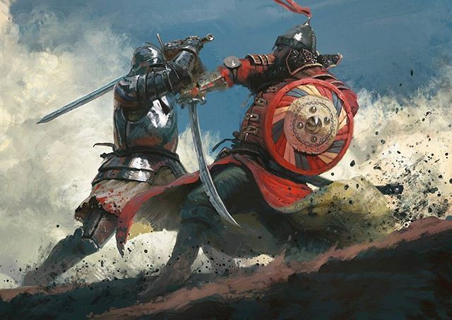

¡Qué horror! Desocupados lectores, vuestra época también está plagada de poderosos encantadores y demonios. Permítidme contaros una aventura que me ocurre hoy.
Me iba a un café, intentando descubrir los secretos de vuestra extraña sociedad. Al entrar en el lugar, vi frente a mí a un joven que tenía a una mujer atrapada en una pequeña jaula de cristal. Le pidió que le libere ya y sino que necesito entrar en duelo conmigo. Lamentablemente, el hombre no me comprendía.
Como caballero, es mi deber defender a la dama. Le prometí que la salvaría rompiendo su jaula. Para hacer eso, lancé la pequeña caja al suelo. Pero fue demasiado tarde, pues los encantadores ya habían sacado a la dama, y ella desapareció antes mis ojos. El hombre se levantó y comenzó a gritarme. Sin embargo, los encantadores debieron castigarlo, ya que no podía entender ni una palabra de lo que decía. En ese instante, llega la doncella Emma que me ayuda. Tras hablar con el hombre en el lenguaje de los encantadores, me explicó que esas “jaulas de cristal” no eran más que “teléfonos”, dispositivos usados para comunicarse con otros sin necesidad de estar presentes físicamente. ¡Oh Dios, vuestra sociedad ha aceptado objetos creados por demonios!
También me explica que estas máquinas tienen varios tamaños. Es con un “ordenador” qué estoy hablando con vosotros. He querido usar un bolígrafo y papel pero Emma me ha avisado que mis letras podrían ser leídas con más personas si uso estas máquinas. Al final del día, como he dicho en mi discurso, el formato no importa, el fin de las letras es de ayudar a la gente a entender las leyes, que sean de la sociedad o de la caballería.
Los duelos son ilegales
Además, aprende que hoy los duelos están prohibidos. ¡Qué locura! ¿Cómo defendéis vuestra honor sin hacer duelos? Emma también me dijo que hoy no hay caballeros andantes sino que la gente puede convertirse y llamarse caballero si contribuyen positivamente a la sociedad sin violencia. Hay algunos caballeros famosos en una tierra que se llama “Inglaterra” como Don Elton John y Don Patrick Stewart. Voy a escribirles una letra para saber más sobre el caballero moderno con la ayuda de Emma y se os mantendrá informados cuando tenga una respuesta.
Comunicar con fantasmas
Pienso que estoy en el tiempo de las brujas. Estais encantados y estais hablando con fantasmas que no existen de verdad. La creación de los espíritus que vos llamáis, la inteligencia artificial es en mi opinión magnifico. Emma me dijo que ayuda a muchas personas a hacer sus tareas más fácilmente. En la castilla de la doncella, había una fantasma que tiene una voz que competiría con la de las ninfas más bellas. No más que Dulcinea por supuesto. Este fantasma se llama Alexa y tenía también un hermano llamado Siri. Sancho, nunca creerá esto pero he tenido la oportunidad de hablar un poco con ellos sobre las aventuras de Amadís de Gaula. ¡Tienen una compañía maravillosa!